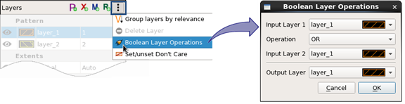
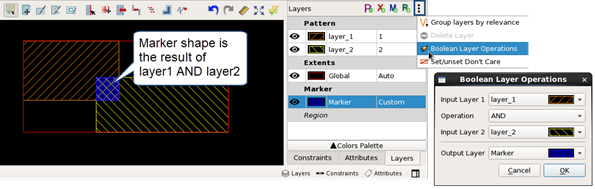

Adding A Boolean Layer Derivation Result to a Pattern
You can add the results of a layer derivation to a pattern layer. The OR, AND, NOT, and XOR layer operations are supported.
Adding the result of a layer derivation is a one-time operation. If the input layers to the layer operation are changed at a later time, the output of the layer operation is not updated.
Prerequisites
A pattern library is open in the Calibre Pattern Matching GUI. See “Invoking the Calibre Pattern Matching GUI”.
Procedure
- Choose
 > Boolean
Layer Operations.
> Boolean
Layer Operations. The Boolean Layer Operations dialog box is displayed.

Examples
This example shows an AND layer derivation used to create a custom marker.
